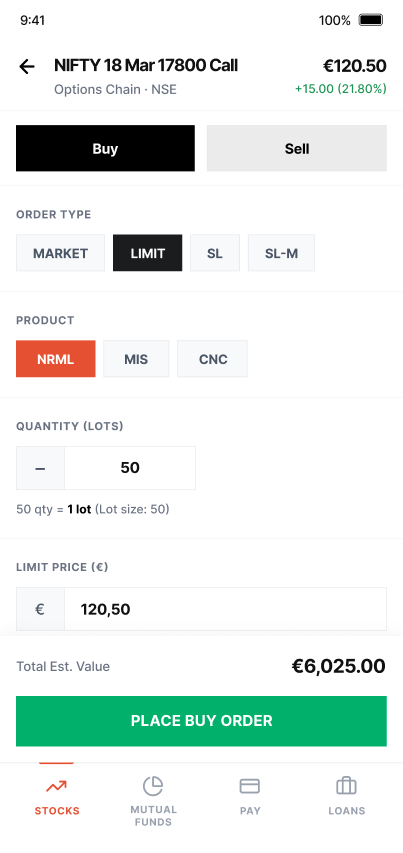

01Explored

Order card as a new panel
This is the shared order card the concept would change. I explored placing it in a smaller panel, but the card also served asset transfers across the ecosystem, making a redesign a large engineering effort.